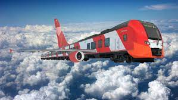

РЖД

помогает быть дома вовремя!
О нас
Хо́лдинг «Росси́йские желе́зные доро́ги» (полное наименование — Открытое акционерное общество «Росси́йские желе́зные доро́ги» (ОАО «РЖД») — российская государственная вертикально интегрированная компания, владелец инфраструктуры общего пользования и крупнейший перевозчик российской сети железных дорог. Образована в 2003 году на базе Министерства путей сообщения России. 100 % акций компании принадлежат Российской Федерации, на основании Федерального закона от 27 февраля 2003 года № 29-ФЗ «Об особенностях управления и распоряжения имуществом железнодорожного транспорта» Правительство Российской Федерации исполняет от имени государства полномочия акционера ОАО «РЖД»[4]. Главный офис находится в Москве[5]. По состоянию на 2012 год компания ОАО «РЖД» входила в тройку крупнейших транспортных компаний мира. Крупнейший работодатель России. По состоянию на 2019 год в компании работают 711 тыс. человек[2], что составляет 1,2 % от общего числа занятых в экономике России.[источник не указан 220 дней] В 2018 году компания заняла в рейтинге глобальной конкурентоспособности второе место по грузообороту, четвёртое место — по пассажирообороту, первое место по безопасности движения[6], энергоэффективности и защите окружающей среды[7][8].
Услуги
Компания поддерживает ряд спортивных клубов и коллективов. Среди наиболее известных — футбольный клуб «Локомотив» (Москва); хоккейные клубы «Локомотив» (Ярославль) и «Сочи», а также баскетбольный клуб «Локомотив-Кубань»[371], генеральным спонсором которых является ОАО «РЖД». Также компания спонсирует автогоночную команду Russian Time в гоночной серии GP2[372][373]. С 1936 года функционирует добровольное спортивное общество железнодорожников — «Локомотив»; с 2003 года в финансировании общества принимает участие ОАО «РЖД». ОАО «РЖД», регулярно отправлявшее до 2015 года своих работников в вынужденные отпуска без содержания и жаловавшееся на нехватку финансирования для реализации производственных программ[363], с сентября 2014 года выступило спонсором ледового шоу «Ледниковый период», о чём указано в титрах телепередачи. С 2019 года РЖД спонсирует «Экономический обзор» в ежедневных выпусках новостей федерального телеканала НТВ, о чём указано в заставке передачи. 28 сентября 2015 года премьер-министр РФ Дмитрий Медведев поручил руководству РЖД в целях экономии ресурсов избавиться от непрофильных активов — футбольного клуба «Локомотив» и корпоративного телевидения «РЖД-ТВ». Ранее председателем правительства было предписано новому главе компании Белозёрову сократить расходы холдинга на 10 %. С учётом встречных пожеланий президента Путина компания нашла возможность сохранить оба крупных непрофильных актива, произведя экономию в других расходных статьях, в том числе в инвестициях, развитии инфраструктурных проектов, закупке новой техники[134][374][375]. Ежегодные расходы РЖД на содержание футбольной команды «Локомотив» в 2018 году составляли 6 млрд рублей[376]. Система подготовки дипломированных кадров для РЖД включает 9 организаций высшего образования и их филиальную сеть: Российский университет транспорта (МИИТ), а также Дальневосточный, Иркутский, Омский, Петербургский, Ростовский, Самарский, Сибирский и Уральский государственные университеты путей сообщения. ОАО «РЖД» издаёт единственную в России федеральную отраслевую газету — «Гудок». Из 3,8 млн российских волонтёров около 60 тыс. работают в РЖД (2018)[377]. На балансе РЖД находится 70 Дворцов культуры железнодорожников (в том числе Центральный — ЦДКЖ), которые в бюджетно-финансовых документах компании именуются «непроизводственными активами целевого назначения»[378].
Контакты
Почта
Имя
Комментарий